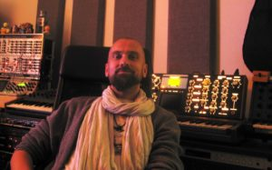
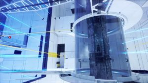
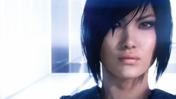

Solar Fields on Composing for the City of Glass
If you, like me, have been enjoying Mirror’s Edge Catalyst lately, you’ve probably noticed how big of a role music plays. The person behind the soundtrack is Solar Fields, who I’ve been able to chat with about his work on Catalyst. Enjoy the interview below as we speak about the creative process, how the soundtrack illustrates each district of Glass and more. And, of course, feel free to listen to a taste of Solar Fields’ work on Catalyst here, while reading the interview.

Mirror’s Edge Catalyst was announced a long time after the original game. When did you begin working on Catalyst?
I started to work on Mirror’s Edge Catalyst in October 2014, and then full time on it for around 1 & 1/2 year.
Do you remember the first piece of music you worked on for Catalyst?
It was some pieces for the mission Back in the Game that i started to work with.
How does the composing process happen? Were you sent
concept art and story info for levels and compose music based
off that?
[Mirror’s Edge developers] DICE sent me all the info that I
requested – manuscripts, concept art, character information and so on. I
also visit DICE on a regular basis to have meetings with the level
designers and audio director Magnus Walterstad.
In the final phase of my work I built up a temporary studio at DICE and worked there, close to the team for a month.

The following questions are from the Mirror’s Edge community.
From Haurebay – How does your music/ambience illustrate each district in Glass?
I tried to set the mood in the music as I felt the different
districts. For example, Rezoning is a little darker and rough, while The
View is more polished and light.
From Blessedbetheslacker – What other games
did you draw inspiration from, and what other games would you be
interested in composing soundtracks for?
I do not get inspiration from other games when I compose for
Mirror’s Edge. I guess it’s the Mirrors Edge world that inspires me.
And
I would really like to score some horror game in the future.
From Krydar – For the main Catalyst theme (not ‘Warning Call’), what exactly did you use to achieve that sound?
It is a tweaked Rhodes piano that is a bit crushed and layered
with some synth pads, and then into a effect chain. The Rhodes gives the
attack of the sound and the pads give the shimmering sound.
From Turtles_csgo – Do you have a favourite Mirror’s Edge moment from either game?
From [the original] Mirror’s Edge it has to be the Stormdrains. I absolutely loved the epicness of the design.
I still haven’t played the final released version of Mirror’s Edge
Catalyst, but from what I can remember during the development I really
enjoyed the Gridnodes.

From Graphiteshard – How will you be structuring the album release for Catalyst? Will it be a handful of mission suites with a lot of music mixed in to each-other?
At the moment, I cant talk about how the soundtrack is formed, but I’m sure you will all be happy.
From Acceleratio – Are there any fun details about Catalyst’s music that not many people know of?
Not sure it is fun, but one of my synthesisers that I use a lot
when I work on Mirrors Edge broke down basically the same day I was done
with everything for Catalyst.
From Rassatu – Who is your favourite character from either Mirror’s Edge game?
Boring answer, maybe, but it is Faith. She’s been with me since 2007.
From Buraku78 – If another Mirror’s Edge was to be made, would you like to return once again to compose for it?
I would love to.

And that’s all. Now, I’m off to replay some of them Gridnodes. Thanks
for reminding me, Solar Fields! Will we see the composer return for
Catalyst DLC or maybe even more full
Mirror’s Edge games? I’m certainly hoping so, but only time will tell.
For now, keep on eye on Solar Field’s
Facebook page and
website for updates, and to hear news about the official
Catalyst soundtrack release which is penned for this Summer.